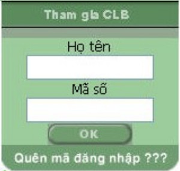
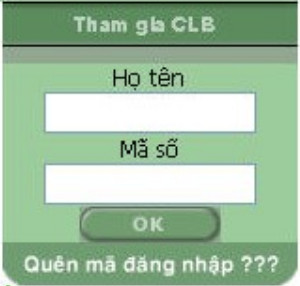

|
|
 |
|
 |
|


 Muôn hoa đua sắc
Muôn hoa đua sắc
Đã là hoa thì hoa nào cũng đẹp. Kể từ những đoá hoa
dân dã giản dị bình thường. Hoa sim, hoa mua
tím
biếc sườn
đồi. Hoa cà tím biếc vườn quê. Hoa
lục bình tím biếc trên dòng sông. Hoa súng tím biếc
ao làng. Hoa
xoan tím
biếc những chiều xóm
vắng…. Hoa gạo đỏ đầu làng, hoa phượng đỏ trời
góc phố. Hoa mào gà, hoa dong
riềng đỏ
góc vườn
ai. Hoa cau, hoa dừa trắng phau lưng trời. Những
loài hoa dân giả muôn màu muôn sắc cũng
đẹp
huống
chi là các loài hoa quý phái.
Một trong những loài hoa quý phái là hoa lan. "Vua thưởng lan, quan thưởng trà". Cái
hương
lan - " cái hương thuỷ
quái gì mà mê đắm lòng người đến thế". Phong lan thơm
sực nức, nồng nàn, gần gũi. Địa lan thanh
cao, nhẹ nhõm,
lúc thắm thiết, sực nức, lúc
nhạt nhoà xa xăm. Đoá bạch ngọc khi nở có màu sáng như chiếc hài của
thần vệ nữ tự
ngày xưa.
Hoa mai có nhiều loài. Từ ngũ đài hoa - năm cánh vàng rực rỡ đến hoàng tỉ trên 30
cánh. Hoa mai đẹp
từ gốc đến
cành, sống lâu bền, xếp vào hàng cổ thụ "lão mai độc
thọ nhất chi vinh" (thơ cổ). Hoa mai
không phô sắc hương
mà khiêm tốn dịu dàng,
tượng trưng cho cốt cách của người quân tử, chịu được cái giá rét của mùa
đông để nở
vào
một sớm xuân hồng.
Hoa cúc vàng trong hàng tứ quý " tùng, cúc, trúc, mai" tượng trưng cho mặt trời, cho
quyền
lực. Cúc đại đoá bông
to, cành cong lộng lẫy sang trọng, cúc vạn thọ giản dị, bền
lâu. Hoa cúc là loại "diệp bất li
chi, hoa vô lạc địa", lá
cúc không bao giờ rời khỏi cành dẫu
đã héo khô, hoa tàn cánh không rụng như người quân tử không xa
rời lý
tưởng.
Loài hoa mang biểu tượng của mùa xuân là hoa đào. Những cánh hoa đào rưng rưng
khoe sắc, màu hồng
phơn
phớt hay hồng đậm xen trong lá non như vẻ e ấp ngại ngùng
như người thiếu nữ. Hoa đào như muôn cánh
bướm
hồng rung rinh trong gió, khoe sắc
trong nắng xuân.
 
